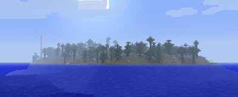
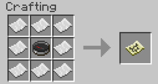

Se repérer est parfois difficile. Une technique pour se repérer:
Créer une tour de 30 blocs de haut (ou plus),
bardées de
torches offre un repère efficace, il peut être utile de la construire en bordure d'une flaque d'eau un peu
profonde pour pouvoir vous laisser tomber une fois au sommet de votre construction sans subir de dégats dus à la
chute.

Autre méthode:
Le sens de rotation du soleil et de la lune est toujours le même jour après jour, vous pouvez donc vous y
retrouver parmi les 4 directions possibles quand vous êtes totalement perdu. Le soleil va dans la direction de
l'Ouest, et la lune vers l'Ouest également.
Autre méthode:
Tel le petit Poucet, vous pouvez également semer des blocs de cobble (avec une torche dessus par exemple) tout
le long de votre chemin. Il vous suffira alors de les suivre pour revenir sur vos pas, ou retrouver l'objet de
votre voyage lors d'une prochaine expédition.
Autre méthode:
Si vous trouvez les blocs de cobble trop "mainstream", optez pour les champignons nourris à la poudre d'os,
c'est TRES visible et présente l'interêt secondaire de vous protéger de la pluie, voir de vous
fournir le toit de votre nouvel abri de jardin.
La carte
Pour confectionner une carte, entourez une boussole de huit feuilles de papier.

Le lieu de conception est très important. Une carte fabriquée dans le Nether ne fonctionnera que dans le Nether.
Une carte confectionnée dans le monde normal, ne fonctionnera que dans celui-ci.
La position dans le monde est aussi très importante. Si vous faites la carte en x=0/z=0, ce point sera le centre
de la carte. Si vous en faites une autre en x=1000/z=1000, ce sera alors son centre.
Au départ la carte n'affiche qu'un petit cercle avec un pointeur qui vous représente en son centre. Pour que le
terrain soit visible, il faut équiper la carte et se déplacer en la tenant. Si vous n'avez pas la carte en main,
le terrain ne sera pas retranscrit et des zones vides parsèmeront l'espace.
La carte se met à jour quand vous vous déplacez, cela implique que si le terrain change au cours du temps, la
carte ne s'actualisera pas toute seule, il vous faudra repasser par la zone à mettre à jour.
La carte ne possède qu'un niveau zoom, mais à l'avenir, le niveau de précision devrait pouvoir être décidé à la
création de la carte. Pour le moment, une carte représente un carré de plus de 1000*1000, centré sur le point de
création de la carte.
Le haut de la carte n'est pas le Nord, mais l'Est.
Le Nord sur trouve vers la gauche.Dans le Nether, la carte ne montrera pas exactement le relief ni vos
directions, car le pointeur ne fonctionne pas bien. Cependant, il peut vous permettre de retrouver votre
portail, si vous créez la carte à coté du portail.
Lorsque vous affichez l'écran d'information (F3), sur la gauche de l'écran les coordonnées de votre personnage
sont affichées. Les coordonnées X et Z sont la position dans le monde, la coordonnée Y correspond à l'altitude
dans le monde, qui peut aller jusqu'à 128. Information intéressante, lorsque vous êtes dans une grotte naturelle
pour savoir si vous êtes en droit d'espérer trouver des choses intéressantes. Vous pouvez garder en mémoire sur
une feuille de papier les positions des éléments intéressants et vous rediriger quand il le faut.Pour déduire la
direction que vous prenez, observez la variation des coordonnées X et Z :
x augmente : Sud
x diminue : Nord
z augmente : Ouest
z diminue : Est
Sinon, il y a une autre technique. Prenez de la magnétite et posez-là à un endroit important (coffre, point de
spawn, lieu de découverte de ressources...) Et gardez une boussole avec vous. Elle indiquera tout le temps
l'emplacement de la magnétite. Pratique!